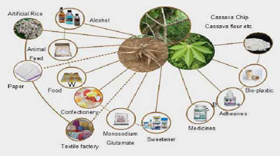

THE FUTURE ?
Support is needed to quick-start a manufacturing company to produce the harvester on commercial scale, carry out more market research, advertise and promote the device among cassava growers and starch producers in Africa and beyond.
The only spare part of the device is the digging blade that wears and needs replacement after harvesting a certain farm size. Continuous scientific research is needed to develop soil specific wear resistant blades to prolong lifespan and reliability of the device for users.
China, Thailand and Brazil also produce cassava harvesters but the TEK Mechanical Cassava Harvester (TEK MCH) is lighter and does not require any dedicated high power-rated tractors. The device can be pulled by existing tractors owned by small-scale farmers on the continent.
Funds are needed to undertake more market research, develop durable blades, train manufacturers and tractor operators in the proper production, operation, repairs & maintenance of the implement during this initial introductory stage.

Some industrial products from cassava